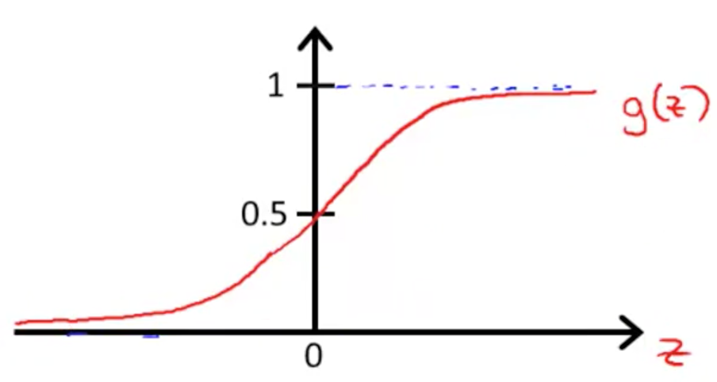

线性回归与逻辑回归¶
线性回归¶
- 一般式:
\[h_\theta(x)=\theta^Tx=\theta_0+\theta_1x_1+\theta_2x_2+\cdots+\theta_nx_n\]
- 损失函数(L2正则):
\[J(\theta)=\frac{1}{2m}\left[\sum_{i=1}^m(h_\theta(x^{(i)})-y^{(i)})^2+\lambda\sum_{j=1}^n\theta_j^2\right]\]
- 目标: 最小化损失函数，即:
\[\min\ J(\theta)\]
- 梯度下降一般式:
\[\theta_j:=\theta_j-\alpha\frac{\partial}{\partial\theta_j}J(\theta)\]
- 线性回归的梯度下降:
\[\begin{split}\begin{align}
\theta_j & := \theta_j-\alpha\left[\frac{1}{m}\sum_{i=1}^m(h_\theta(x^{(i)})-y^{(i)})x_j^{(i)}+\frac{\lambda}{m}\theta_j\right]\\
& := \theta_j(1-\alpha\frac{\lambda}{m})-\alpha\frac{1}{m}\sum_{i=1}^m(h_\theta(x^{(i)})-y^{(i)})x_j^{(i)}
\end{align}\end{split}\]
逻辑回归¶
- 一般式:
\[h_\theta(x)=g(\theta^Tx)\]
- Sigmoid Function
\[g(z)=\frac{1}{1+e^{-z}}\]

{kind=link}
- 损失函数(L2正则):
\[\begin{split}\begin{align}
Cost(h_\theta(x),y) & =
\begin{cases}
-\log(h_\theta(x)) & \mbox{if }y=1 \\
-\log(1-h_\theta(x)) & \mbox{if }y=0
\end{cases}\\
& = -y\log(h_\theta(x))-(1-y)\log(1-h_\theta(x))
\end{align}\end{split}\]
\[\begin{split}\begin{align}
J(\theta) & = \frac{1}{m}\sum_{i=1}^mCost(h_\theta(x^{(i)}),y^{(i)})+\frac{\lambda}{2m}\sum_{j=1}^n\theta_j^2\\
& = -\frac{1}{m}\sum_{i=1}^m\left[y^{(i)}\log(h_\theta(x^{(i)}))+(1-y^{(i)})\log(1-h_\theta(x^{(i)}))\right]+\frac{\lambda}{2m}\sum_{j=1}^n\theta_j^2
\end{align}\end{split}\]
- 逻辑回归的梯度下降(正好形式与线性回归一致，区别在于 \(h_\theta(x)\) 不同):
\[\begin{split}\begin{align}
\theta_j & := \theta_j-\alpha\left[\frac{1}{m}\sum_{i=1}^m(h_\theta(x^{(i)})-y^{(i)})x_j^{(i)}+\frac{\lambda}{m}\theta_j\right]\\
& := \theta_j(1-\alpha\frac{\lambda}{m})-\alpha\frac{1}{m}\sum_{i=1}^m(h_\theta(x^{(i)})-y^{(i)})x_j^{(i)}
\end{align}\end{split}\]
{kind=link}